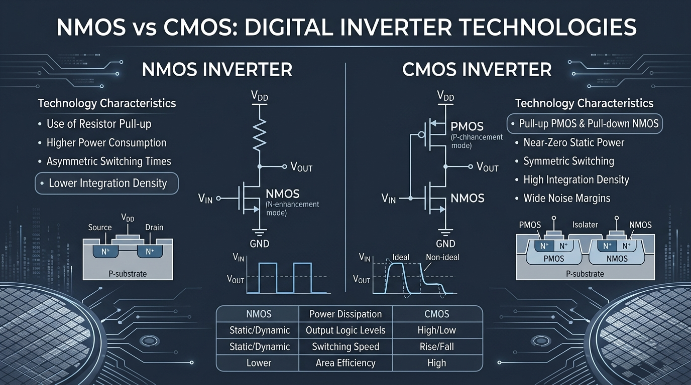

VLSI
NMOS vs CMOS Inverter: Performance, Power and Area Comparison
A detailed comparison of NMOS and CMOS inverter technologies, focusing on performance, power consumption, area, and their suitability for modern VLSI design.